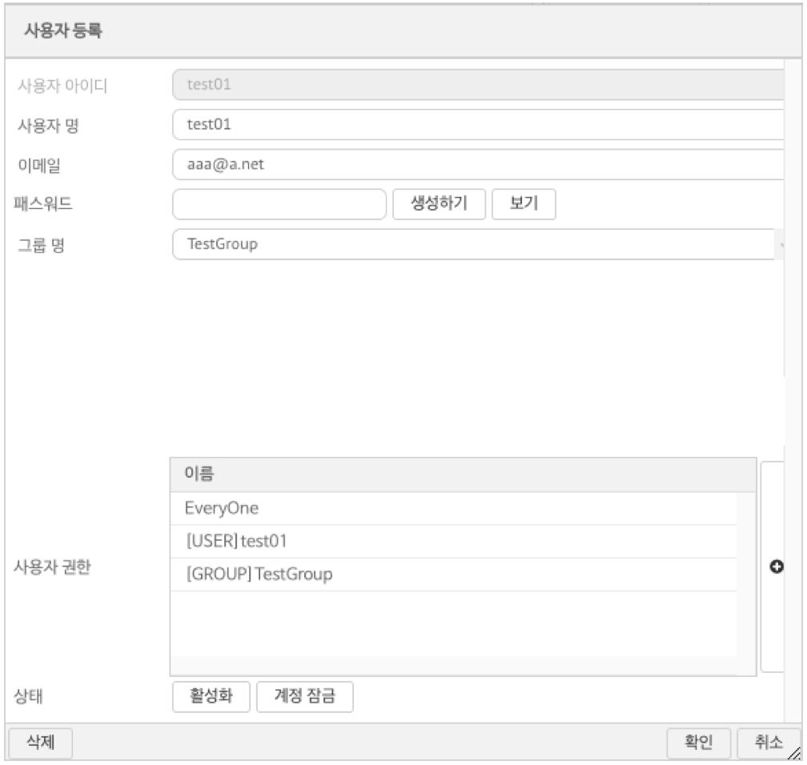

네비게이션
3.1.1. 사용자 관리
사용자 관리
사용자 관리 메뉴에 접근하려면 메인 메뉴의 관리를 클릭한 후 시스템 -> 사용자 관리 서브 메뉴를 클릭한다.
(그림 : 사용자 관리 메뉴 접속)
1 메인 메뉴의 관리 를 클릭하여 세부 메뉴 항목을 팝업 메뉴를 생성한다.
2 시스템 서브메뉴의 사용자 관리를 클릭한다.
3 사용자 관리 화면이 탭 작업 영역에 추가된다.
사용자 관리
(그림: 사용자 관리 화면 레이아웃 구성)
사용자의 추가 / 편집
사용자를 그룹에 추가하려면 사용자 툴바의 사용자 추가 버튼을 클릭한다. 이미 존재하는 사용자를 변경하려면 사용자 목록 그리드의 항목을 클릭하여 사용자 설정 팝업 윈도우에서 내용을 수정한다.

(그림 : 사용자 등록 화면 레이아웃)
사용자 아이디 : 시스템 전체에서 단일한 이름을 가지는 로그인 아이디 값을 입력한다.
사용자 명 : 사용자의 실제 이름을 입력한다.
이메일 : 사용자의 이메일 계정을 입력한다.
패스워드 : 시스템 규칙에 맞는 패스워드를 입력한다.
- 생성하기 버튼 : 패스워드를 자동 생성한다.
- 보기 버튼 : 패스워드의 실제 값을 보여준다. 관리자가 계정 생성하고 해당 계정의 패스워드를 사용자에게 안내하는 경우 사용한다.
그룹명 : 사용자를 생성할 그룹의 이름을 입력한다.
사용자 권한 : (+) 버튼을 클릭하여 본 계정에 부여할 권한을 추가 / 삭제 할 수 있다. 자세한 사항은 사용자 권한설정 항목을 참조한다.
상태 : 계정의 시용자를 임시로 로그인 하지 못하게 할 경우 계정 잠금을 클릭하여 상태를 변경할 수 있다.
삭제 : 계정을 영구히 삭제한다.
비밀 번호의 규칙
- 8자 이상의 영문 알파벳
- 첫 문자는 영문 알파벳으로 시작되어야 함.
- 숫자가 한개 이상 반드시 포함
- 대문자가 한개 이상 반드시 포함
- 소문자가 한개 이상 반드시 포함
- 특수문자를 한개이상 반드시 포함하며 특수문자의 범위는 다음만을 포함한다 (@#$%^&+=)
사용자 권한 설정
사용자 권한 목록 오른편의 (+) 아이콘을 클릭하여 사용자 권한 관리 팝업 화면을 호출한다.
(그림 : 사용자 권한 관리)
사용자에게 이미 부여된 권한이 오른쪽 그리드에 표시되며, 시스템에서 등록가능한 권한 목록이 왼쪽 그리드에 표시된다. 추가할 권한 혹은 삭제할 권한을 체크 버튼으로 선택한 이후 << 버튼 혹은 >> 버튼을 통해 삭제 / 추가 한 이후 확인 버튼을 클릭하여 변경사항을 저장한다.
사용자의 권한 변경 내용은 사용자의 다음 로그인 시 적용된다.
사용자 그룹 추가
사용자 그룹은 사용자를 부서 혹은 특정 폴더로 맵핑하는 데 사용된다. 사용자 그룹을 추가하려면 사용자 목록 툴바의 그룹 추가 버튼을 클릭하여 생성한다.
사용자 그룹 생성에 사용되는 항목은 다음과 같다.
- 항목명 : 그룹의 이름
- 그룹 아이디 : 그룹의 영문 단축이 필요한 경우 입력 한다.
- 설명 : 그룹에 대한 부가 설명을 입력 한다.
권한 관리
메인 툴바의 권한 버튼을 클릭하면 권한 목록 탭으로 전환된다.
(그림 : 권한 관리 화면 레이아웃)
신규 권한의 추가 / 삭제의 작업을 수행할 수 있으며, 권한을 특정 사용자에게 추가로 부여할 수 있다.
권한 목록의 컬럼은 다음과 같다.
- 이름 : 권한의 이름
- 설명 : 권한에 대한 부가 설명 정보를 나타낸다.
- 상태 : 권한의 현재 상태를 나타낸다.
- Defalut : 시스템 설치시 생성된 권한
- Custom : 커스텀 추가 권한
- User : 사용자 권한
- Group : 그룹 권한
* 사용자 비밀 번호의 암호화
사용자의 비밀 번호는 SHA-256 해쉬키 방식으로 메타 데이터베이스에 저장된다.
저장되는 비밀 번호의 보안을 위해 솔트값이 적용되어 있으며, 솔트값과 조합된 원본 비밀번호가 SHA-256 방식으로 저장되며 복호화 되지 않는다.